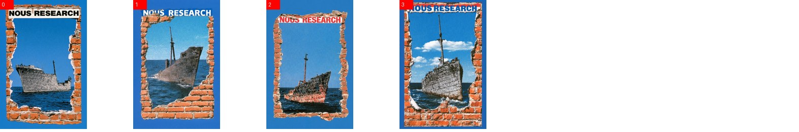
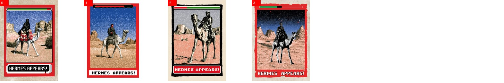
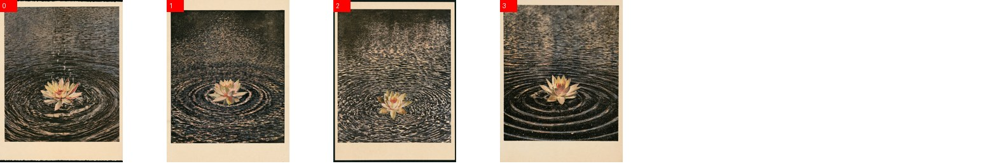
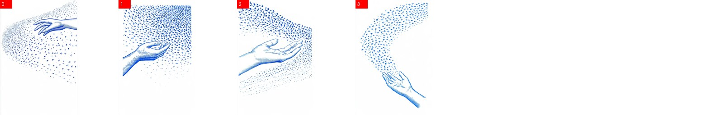
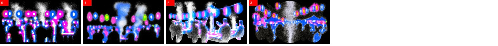
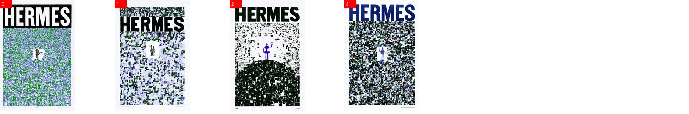
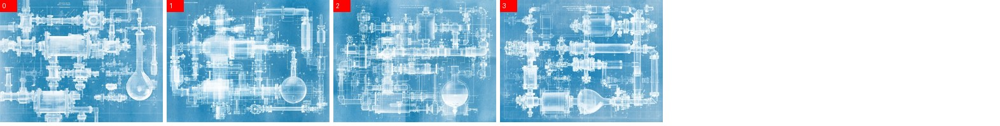

30 Nous/Hermes-inspired style references by djm. Paste a code after any prompt. Codes encoding technique (print process, linework) hold across subjects; atmosphere codes take over the image. When a moodboard and an sref are combined, --sw is ignored and --s sets the joint strength.
Machine-readable: djm-style-pack.json.
no sample yet
Pool
--sref 128610232 3035578412 2783751482
seed-set/atmosphere · interior, perspective, pale
Tier A (atmosphere): seed set behaves like a near-complete image; subject becomes decorative and wordmarks rarely survive. 3-seed stacks bias toward symmetrical one-point perspective. Harvested from --sref random winners, 2026-07-27/28 runs. Description is djm's run note, not a measurement; palette unmeasured (sample images on an offline drive).
no sample yet
Venus
--sref 1649694076 3731117963 1032521734
seed-set/atmosphere · gallery, amber, indigo
Tier A (atmosphere): seed set behaves like a near-complete image; subject becomes decorative and wordmarks rarely survive. 3-seed stacks bias toward symmetrical one-point perspective. Harvested from --sref random winners, 2026-07-27/28 runs. Description is djm's run note, not a measurement; palette unmeasured (sample images on an offline drive).
no sample yet
Ropewalk
--sref 1231610480 597033662 564824093
seed-set/atmosphere · interior, red-ochre, monumental
Tier A (atmosphere): seed set behaves like a near-complete image; subject becomes decorative and wordmarks rarely survive. 3-seed stacks bias toward symmetrical one-point perspective. Harvested from --sref random winners, 2026-07-27/28 runs. Description is djm's run note, not a measurement; palette unmeasured (sample images on an offline drive).
no sample yet
Tartan
--sref 1991110510 2959847791 729924006
seed-set/technique · textile, pastel, woven
Tier T (technique): measured to transfer across subjects; safe to lock for a series. 3-seed stacks bias toward symmetrical one-point perspective. Harvested from --sref random winners, 2026-07-27/28 runs. Description is djm's run note, not a measurement; palette unmeasured (sample images on an offline drive).
no sample yet
Loom
--sref 3662885606 2330289619
seed-set/technique · technical, exploded-view, blue-red
Tier T (technique): measured to transfer across subjects; safe to lock for a series. 3-seed stacks bias toward symmetrical one-point perspective. Harvested from --sref random winners, 2026-07-27/28 runs. Description is djm's run note, not a measurement; palette unmeasured (sample images on an offline drive).
no sample yet
Tidemill
--sref 4046559015 2833167635
seed-set/technique · flat, folk, ochre
Tier T (technique): measured to transfer across subjects; safe to lock for a series. 3-seed stacks bias toward symmetrical one-point perspective. Harvested from --sref random winners, 2026-07-27/28 runs. Description is djm's run note, not a measurement; palette unmeasured (sample images on an offline drive).
no sample yet
Landfill
--sref 2990839814 830957711
seed-set/atmosphere · blueprint, cyan, linework
Tier A (atmosphere): seed set behaves like a near-complete image; subject becomes decorative and wordmarks rarely survive. 3-seed stacks bias toward symmetrical one-point perspective. Harvested from --sref random winners, 2026-07-27/28 runs. Description is djm's run note, not a measurement; palette unmeasured (sample images on an offline drive).
no sample yet
Bubble
--sref 2141854496
seed-set/technique · deco, scientific-plate, silver
Tier T (technique): measured to transfer across subjects; safe to lock for a series. 3-seed stacks bias toward symmetrical one-point perspective. Harvested from --sref random winners, 2026-07-27/28 runs. Description is djm's run note, not a measurement; palette unmeasured (sample images on an offline drive).
no sample yet
Cyanotype + Oracle Orange
--sref 2139432444 3729836101
seed-set/house · cyanotype, orange, duotone, hermes
Run note: 'mechanical brain cyanotype' + 'oracle orange' -> blue/orange duotone. Was the even-cycle default for 505/1005 prompts in one run, which is why the Hermes feed reads blue/orange. Palette unmeasured.
no sample yet
Exploded Schematic (pink/blue)
--sref 1193072009 2657426683
seed-set/house · schematic, pink, blue
Harvested pair from the same bank; run note says 'exploded schematic pink/blue'. Which code is which is not recorded; never used in a logged prompt (0 uses), so untested.

Found 1806980163
--sref 1806980163
seed-set/discovered · framed photography, dark tones, blue highlights, moody
Code Midjourney resolved from --sref random; used once, transfer across subjects not tested. Palette measured from the sample. Tags are rough, auto-generated from a thumbnail.

Found 723139161
--sref 723139161
seed-set/discovered · travel poster design, blue and orange, framed scenes, retro
Code Midjourney resolved from --sref random; used once, transfer across subjects not tested. Palette measured from the sample. Tags are rough, auto-generated from a thumbnail.

Found 2228913787
--sref 2228913787 1974745296
seed-set/discovered · poster illustration, red borders, muted blue, retro
Code Midjourney resolved from --sref random; used once, transfer across subjects not tested. Palette measured from the sample. Tags are rough, auto-generated from a thumbnail.

Found 920466881
--sref 920466881 3906771829
seed-set/discovered · vintage cover design, black and gold, ornate texture, somber
Code Midjourney resolved from --sref random; used once, transfer across subjects not tested. Palette measured from the sample. Tags are rough, auto-generated from a thumbnail.

Found 4200885497
--sref 4200885497 3919238390
seed-set/discovered · poster design, black and white, bold lettering, gritty
Code Midjourney resolved from --sref random; used once, transfer across subjects not tested. Palette measured from the sample. Tags are rough, auto-generated from a thumbnail.

Found 1304785094
--sref 1304785094 4107352295
seed-set/discovered · editorial collage, blue and red, printed texture, nostalgic
Code Midjourney resolved from --sref random; used once, transfer across subjects not tested. Palette measured from the sample. Tags are rough, auto-generated from a thumbnail.

Found 4161553467
--sref 4161553467
seed-set/discovered · collage, pink and blue, layered detail, playful
Code Midjourney resolved from --sref random; used once, transfer across subjects not tested. Palette measured from the sample. Tags are rough, auto-generated from a thumbnail.

Found 2244442099
--sref 2244442099
seed-set/discovered · minimal illustration, pale blue, white background, airy
Code Midjourney resolved from --sref random; used once, transfer across subjects not tested. Palette measured from the sample. Tags are rough, auto-generated from a thumbnail.

Found 78773288
--sref 78773288
seed-set/discovered · abstract pattern, blue and white, fluid lines, calm
Code Midjourney resolved from --sref random; used once, transfer across subjects not tested. Palette measured from the sample. Tags are rough, auto-generated from a thumbnail.

Found 1242037513
--sref 1242037513
seed-set/discovered · stage photography, neon purple, high contrast, energetic
Code Midjourney resolved from --sref random; used once, transfer across subjects not tested. Palette measured from the sample. Tags are rough, auto-generated from a thumbnail.

Found 1919270609
--sref 1919270609
seed-set/discovered · magazine cover design, teal and grayscale, textured, vintage
Code Midjourney resolved from --sref random; used once, transfer across subjects not tested. Palette measured from the sample. Tags are rough, auto-generated from a thumbnail.

Found 1873124578
--sref 1873124578 1682311858
seed-set/discovered · aerial photography, gray and teal, repeating panels, quiet
Code Midjourney resolved from --sref random; used once, transfer across subjects not tested. Palette measured from the sample. Tags are rough, auto-generated from a thumbnail.

Found 2847375512
--sref 2847375512
seed-set/discovered · blueprint-style graphics, cyan and white, dense detail, technical
Code Midjourney resolved from --sref random; used once, transfer across subjects not tested. Palette measured from the sample. Tags are rough, auto-generated from a thumbnail.
Found 2581813621
--sref 2581813621
seed-set/discovered · panoramic collage, monochrome blue, grainy, atmospheric
Code Midjourney resolved from --sref random; used once, transfer across subjects not tested. Palette measured from the sample. Tags are rough, auto-generated from a thumbnail.

Found 923980132
--sref 923980132
seed-set/discovered · spiral illustration, purple and teal, radial pattern, hypnotic
Code Midjourney resolved from --sref random; used once, transfer across subjects not tested. Palette measured from the sample. Tags are rough, auto-generated from a thumbnail.

Found 1187448633
--sref 1187448633 2570875828
seed-set/discovered · digital illustration, electric blue, black background, dreamlike
Code Midjourney resolved from --sref random; used once, transfer across subjects not tested. Palette measured from the sample. Tags are rough, auto-generated from a thumbnail.

Found 1509935263
--sref 1509935263
seed-set/discovered · diagrammatic illustration, pale blue, white background, clinical
Code Midjourney resolved from --sref random; used once, transfer across subjects not tested. Palette measured from the sample. Tags are rough, auto-generated from a thumbnail.
Found 2626947688
--sref 2626947688
seed-set/discovered · digital artwork, deep blue, luminous circles, serene
Code Midjourney resolved from --sref random; used once, transfer across subjects not tested. Palette measured from the sample. Tags are rough, auto-generated from a thumbnail.
Found 3621756407
--sref 3621756407
seed-set/discovered · digital illustration, deep blue, glowing light, mysterious
Code Midjourney resolved from --sref random; used once, transfer across subjects not tested. Palette measured from the sample. Tags are rough, auto-generated from a thumbnail.

Found 4236490660
--sref 4236490660
seed-set/discovered · pattern design, blue and white, repeating circles, orderly
Code Midjourney resolved from --sref random; used once, transfer across subjects not tested. Palette measured from the sample. Tags are rough, auto-generated from a thumbnail.